Hazel reports
Reports on the Hazel work: most of them on making Hazel responsive enough for its livelits to feel like plain apps (what we measured, what we found, what we fixed), and others on what else comes up, such as a survey of the UI, why a branch failed CI, or a meeting's agenda. Matthew Hammer.
Where this work is tracked, day to day: the Hazel Work Dashboard. The series' source: matthewhammer/hazel-reports on GitHub.
-
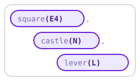
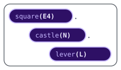
^report(33)· 2026-10-25 · work in progressWriting Messed Up Dress Up's game rules in Hazel: what a rule sees today (Event, Cmd, and a Globals that is really each room's view), the game's eleven words for where, and a proposal: one readable address for every place, thing and person, with Globals, RuleState and Cmd built on it. Every address of the default world in an appendix.
-
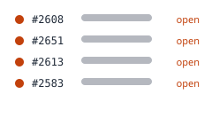
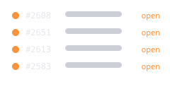
^report(31)· 2026-10-23 · work in progressWhat reviewers have said on Matthew's open hazelgrove/hazel pull requests that has not been acted on yet: each piece of feedback, whether a later commit or reply answered it, and what is left.
-
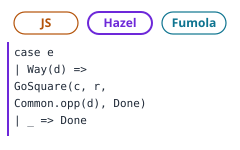
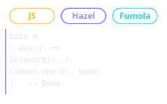
^report(30)· 2026-10-23 · work in progressSince the 2026-10-21 meeting: Hazel as Messed Up Dress Up's script system. The rules run in Hazel and in Fumola beside the game's JS; a World move with the game's own map takes about a millisecond at every size, but only with library fixes the game's build does not have yet. Where the goal stands, and the plan.
-
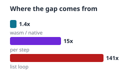
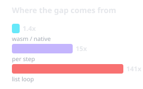
^report(29)· 2026-10-22 · work in progressHazel and Fumola on the same eight small programs, timed, step-counted and profiled (
^ticket(545)): wasm costs Fumola 1.2 to 1.5 times; Hazel takes half Fumola's steps but each costs about 15 times as much; a function Hazel's JS library returns re-evaluates what it holds at every call, and a list loop re-types its list, quadratic. First fixes for both, and Fumola taking JSON values, measured on trial branches. -
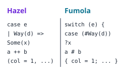
^report(28)· 2026-10-22 · work in progressEach construct Dress Up's rules use, in Hazel and in Fumola, the traps found translating them (Fumola's inverted text !=, no text patterns, Nat and Int apart), how each takes a value from JS, and one rule both ways (
^ticket(543)). -
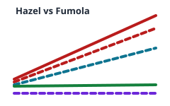
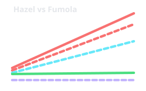
^report(27)· 2026-10-22 · work in progressDress Up's World rule in Hazel at its best (all 14 PRs, the depth-1 memo, the argument binding) and in Fumola (wasm), 3x3 to 64x64 (
^ticket(542)): Fumola with the world held in a HashMap answers in about 0.5 ms and 450 steps at every size; passed or walked, both grow with the map, Fumola 2.4 to 10 times faster. -
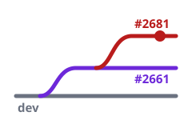
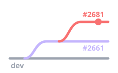
^report(26)· 2026-10-22 · work in progressAlexander asked whether #2681 needs #2661 and suggested retargeting its base. It does: its memo is keyed by #2661's type hash. Merged with #2661's branch and retargeted, #2681 shows reviewers only its own commit (
^ticket(541)). -
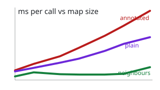
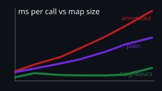
^report(25)· 2026-10-22 · work in progressWhy a call into Hazel is slow for Dress Up's 16x16 World map (
^ticket(531)): one rule call taken apart, its cost quadratic in the map through an annotated helper, linear without it, and nearly flat when only the neighbouring squares are passed. Measured before and after the 14 open performance PRs: #2681 alone makes the annotated rule linear (144 to 20.6 ms), and together they halve the compile. -
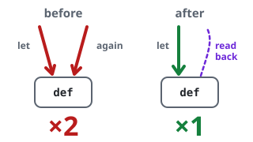
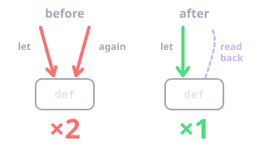
^report(24)· 2026-10-21For Matthew and Alexander's review of #2651 (statics reads a module definition's elaboration back instead of analyzing the definition a second time): how Hazel is built around it, its subsystems, shared representations and protocols, the PR's change in those terms, what a reviewer checks, Alexander's answers to five questions, and the follow-up, #2717, a module binding as a non-recursive let.
-
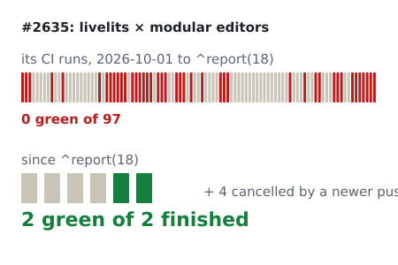
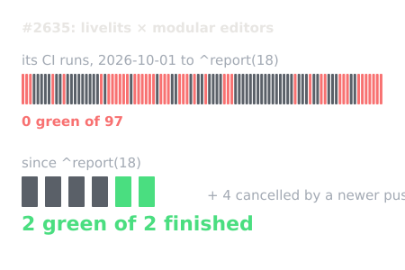
^report(23)· 2026-10-19What happened after
^report(18): #2635 (livelits × modular editors) passed CI twice on 2026-10-19, its first green runs since it was made, with all three causes fixed, one of them a real bug in incremental statics. Of^report(18)'s five next steps two are done, two partly, and one, the plan for merging into dev, is for the meeting with Cyrus (^report(20)). -
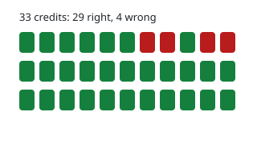
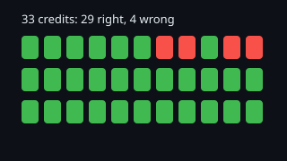
^report(22)· 2026-10-19 · work in progressHow Week in Hazel, Andrew Blinn's AI-written weekly digest, credits each team member's work: right for 29 of 33 credited PRs, wrong where two people share the name "Matt" or where a merge hides the author, with a list of corrections.
-
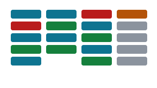
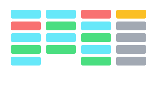
^report(21)· 2026-10-19 · work in progressWhether the performance PRs keep Hazel's results the same: 16 of 19 keep types and values unchanged, two change a result in a corner case, and one, #2490, is a wasm spike not meant to merge.
-
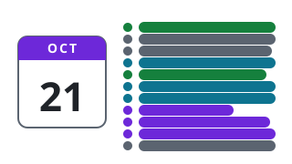
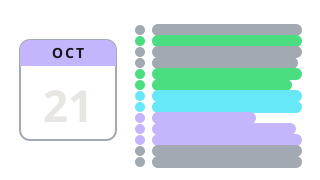
^report(20)· 2026-10-19An agenda, kept up to date until the meeting: the topics Matthew brings to his meeting with Cyrus, most of them Cyrus's own questions, each with where it stands and what it needs from the meeting.
-
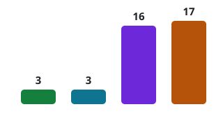
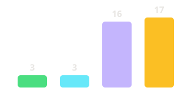
^report(19)· 2026-10-19Every place the Hazel UI shows a term, pattern, type or value, and how it draws it: tiles you edit, read-only tiles you can select, tiles you can only look at, or plain text. For Cyrus's asks about livelits' model views and the explainer's examples, what is missing is selection, not tiles.
-
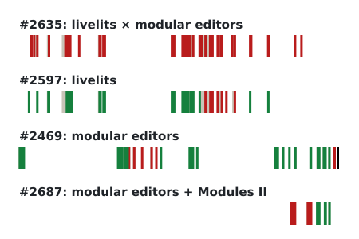
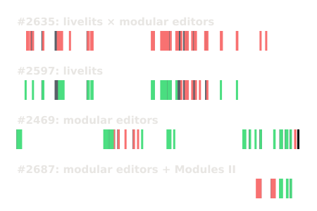
^report(18)· 2026-10-19Why CI fails on #2635, livelits × modular editors: in 97 runs since 2026-10-01 it has never passed, while both parents pass alone with the same tests. The same three gaps have been there from the first run: per-member module analysis meets Modules II (8 tests), dev's canonical completion meets a livelits table test (1), and one livelits document elaborates differently per item (1, cause not found). The fix for the 8 already exists, green, on Andrew's #2687.
-
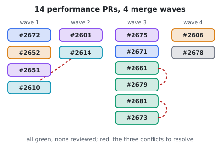
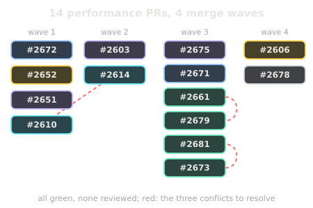
^report(17)· 2026-10-15For whoever reviews them: the fourteen open performance PRs to
dev, each with what it buys and where that was measured, the honest reasons to wait, and what to look at. All are green and merge cleanly one at a time; none is reviewed. On dev they make nested-function statics linear (5.3 s to 13 ms at eight levels), loading text 2.5× faster, and re-evaluation after an edit 2.7 s to 0.41 s in a 400-definition program; on the livelits branches more. Three pairs conflict and three PRs conflict with #2469. A merge plan in four waves, checked by merging them in order: nine go in clean, five need a hand resolution, and with those all fifteen (a fifteenth, #2608, was missing from the list) build and pass the full test suite, 4,756 tests. -
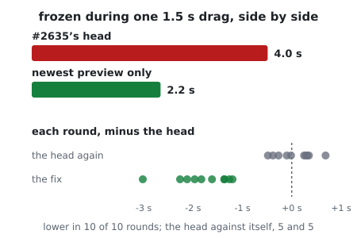
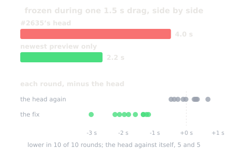
^report(16)· 2026-10-15Two fixes for a slow slider drag on #2635, measured with the builds side by side in one browser, drag by drag, and the head measured twice as a control. Keeping only the newest preview while one is on its way cuts the freeze in a long 1.5-second drag of Full Body's slider from 4.0 to 2.2 s, lower in all ten rounds where the head against itself differed by 0.1 s: it sends fewer repaints, each as slow as before. In UX mode the effect hides in the noise. Evaluating the livelit views in the worker shortens no drag, and in UX mode makes the final picture about a quarter of a second later. Measured a session at a time, neither fix could be told from the drift.
-
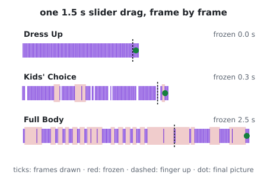
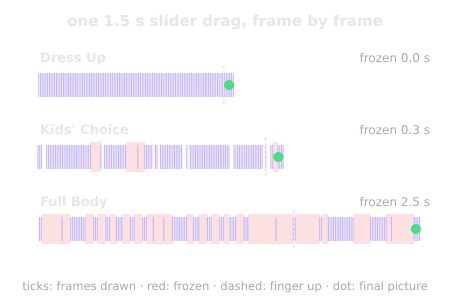
^report(15)· 2026-10-15The same 1.5-second slider drag in Messed Up Dress Up (then a plain-JavaScript game), and in its livelits on #2635, in one browser. Dress Up never froze and its picture was final as the finger lifted, at about 1.4 ms of JavaScript per change. Kids' Choice froze 0.11 s and was final 0.13 s after; Full Body, the whole friend in Hazel, froze 2.9 s and was final 1.1 s after, at about a second per change. A week of fixes took these from 4.6 and 8.6 s. Then a guess, argued step by step, for September 2027: small livelits immediate, Full Body a short lag. Updated later on 2026-10-15: counting shapes shows the comparison is like for like only for the friend alone (46 shapes against Full Body's 49); Dress Up's places draw up to 30 times as much, and still never froze.
-
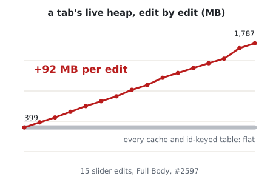
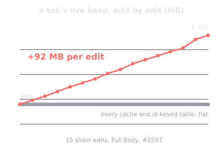
^report(14)· 2026-10-14A tab on #2597 keeps about 92 MB more after every slider edit on Full Body, without levelling off. It is not the caches (each tried in a build of its own) and not any long-lived table (each counted after every edit): what stays is whole versions of the editor's state, made by every stage of an edit. Which reference holds them is still open, since a heap snapshot kills this tab; the lead is ValueHash's WeakMap of about two million entries. Updated later on 2026-10-14: a heap snapshot named it, the undo history, which kept a whole page model per edit, uncapped by default. Andrew Blinn's compaction, ported, with the newest undo entry kept whole so undo stays as fast as before, keeps the tab level: 208 MB after 12 edits, against 1,048. Both are on #2597 and #2635.
-
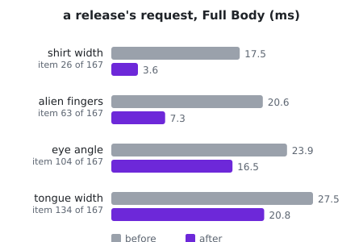
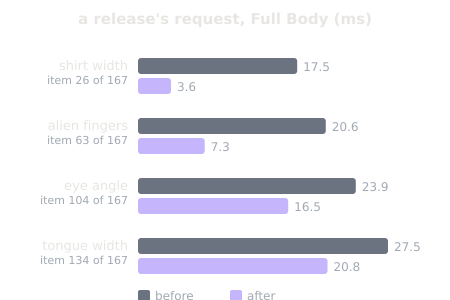
^report(13)· 2026-10-14A slider release's request to the evaluation worker on #2635: building its projection of the statics now takes under a millisecond on every Livelit Playground slide, since the per-item statics say which keys they changed instead of the projection walking both maps. What is left grows with how far down the program the slider sits, since every item above it carries the program below. The three commits behind it, carried to #2469 (one change each, its quick tests whole), and what dev and #2597 need first: per-item statics.
-
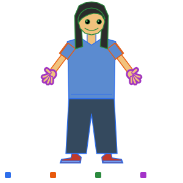

^report(12)· 2026-10-13Full Body rebuilt as a picture of groups with transforms, flattened to today's picture exactly: every slider edit that changes the picture changes at most 14 nodes (it was up to 39 shapes). The computation follows only in part: the eye edits' trace distance falls about ten points; with the tree flattened at the end, the body edits' rises a little, the flattening's own steps; Hazel's update today does not change. Steps, not time.
-
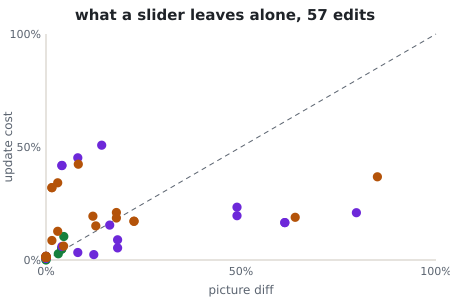
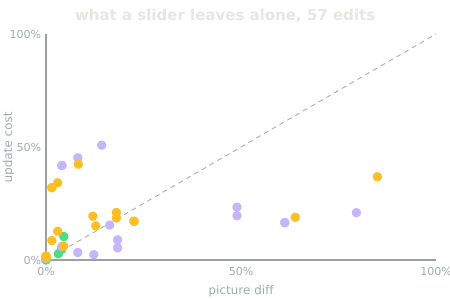
^report(11)· 2026-10-13Every slider on three Livelit Playground slides, 63 edits: what Hazel's own reuse saves (on Full Body and Witch, little: the figure is one binding), what a memo keyed by names could save on top, and how that depends on the names. After Fumola's merge sort, four ways to name a call: by position, by caller, by operand and by content. They agree on edits that only change values; on edits that change which calls are made, naming a call for its operand comes closest to content. And the picture's own representation sets its diff: with groups and transforms instead of a flat list of shapes, every slider edit would change a handful of nodes. Preliminary: steps, with every check free.
-
^report(10)· 2026-10-13Which parts of the picture does a slider change, and can Hazel tell them from the rest? On three Livelit Playground slides, a slider edit changes 5 to 16% of the picture's shapes, yet Hazel evaluates the whole picture again (
^report(9)). Naming each call by position, as Incremental Computation with Names names allocations in its interpreter, and comparing its inputs with the run before: 75 to 84% of the steps Hazel takes today are in calls whose inputs did not change. Preliminary: steps, with every check free, not times. -
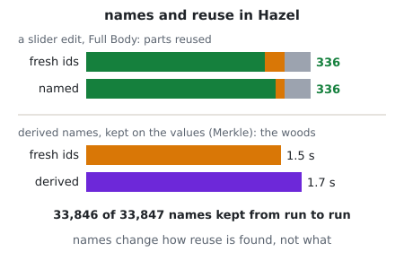
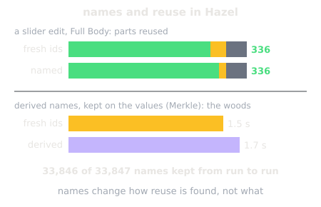
^report(9)· 2026-10-13How do fresh ids relate to lack of reuse? The question of Incremental Computation with Names (OOPSLA 2015), asked of Hazel. The editor names the program's syntax; statics and the evaluator mint gensyms for the rest. Analyzing a slide again renames hundreds of nodes, and naming two sites in statics cuts that by seven eighths. But the reuse check falls back to comparing structure, so the same parts are reused either way: in Hazel today, fresh ids cost time, in the check, in the 461,422 ids one woods evaluation mints, and in what crosses to the worker, not reuse.
-
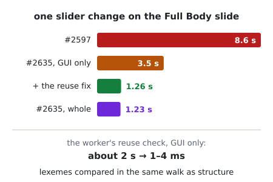
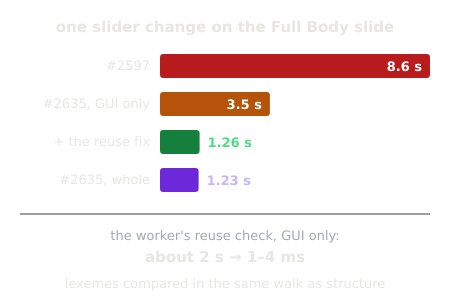
^report(8)· 2026-10-12One slider change on the Livelit Playground's Full Body slide, three ways. On #2597, without modular editing, it takes 8.6 s, mostly statics on the whole program. On #2635, with it, 1.2 s. Showing only the slider and the picture should be faster still, but it took 3.5 s: opening them as cells gives the picture new ids on every change, and the worker's reuse check then compared lexemes in a walk that was quadratic over the program's
lets. Comparing them in the same memoized walk as structure, now on #2635, brings it to 1.26 s, as fast as the whole program. Updated later on 2026-10-14: measured again with the same fixes in both, showing only the GUI was slower again, by the autosave, whose print of a slide with probes had become quadratic in its top-level items; with that fixed (about 1 s to 80 ms a change), the two take the same time, as^report(15)found again on a newer head on 2026-10-15. -
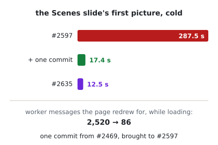
^report(7)· 2026-10-12On #2597, the full livelits branch, the Livelit Playground's Scenes slide took about five minutes to draw its first picture. It really does, 287.5 s against 12.5 s on #2635, and the reason is that the page redraws everything for every message from the worker. #2597's worker sends one after every slice of its evaluation: 2,520 while the slide loads, each costing the page about 140 ms, mostly rebuilding the code editor's view of the whole program. The worker sits idle while the page catches up. One commit from #2469, which sends at most one message every 100 ms, brings the first picture to about 17 s on a copy of #2597.
-
^report(6)· 2026-10-12^report(1)–^report(5)found and fixed performance problems by hand. Nothing in Hazel's CI stops them coming back: no check is required to merge, and the two benchmark workflows never worked ondev. A time can't fail a build on GitHub's runners, where the same tests vary by about 10% from run to run; a count of the work done can. The first such check counts the evaluator's steps and holds them to budgets, and it fails when reuse breaks. Also: building on an earlier benchmarking PR, or starting fresh, compared in a table. -
^report(5)· 2026-10-12Hazel evaluates a program in a web worker and draws it on the page's main thread. Each fix so far, sorted by thread, and compared with a more principled idea: the worker diffs each view and sends the page only patches. A worker cannot build real DOM, only data, and Hazel's Html value is already that data. What crosses between the threads already carries only what changed. What is still done whole on every change is the page's: evaluating each changed view, converting it to virtual DOM, and diffing it. Updated the same day: measured in the woods, evaluating the view is about 69% of the page's time, and converting and diffing about 2%. So the next step is a cheaper view.
-

^report(4)· 2026-10-11M's witch is now a Livelit Playground slide, with her colors, her nose, her cat and her broom, and her woods and three more of the game's backgrounds are a Scenes slide. A witch redraw takes 5–7.5 s. One in the woods took 10–21 s, even when only the figure moved, against 1–3 ms in the game. Three causes were found and fixed. The eval worker sat idle more than half the time; a recursive helper's name leaking out of its
letstopped anything from being reused; and the view's call memo cost more than it saved. A woods redraw now takes 2.6–6.4 s. Updated 2026-10-12: the picture's view made cheaper, a figure move in the woods redraws in a median of 1.41 s. -
^report(3)· 2026-10-11My daughter and son asked for features all afternoon, and each went live in the game as soon as it was ready: claws and star points to 100, longer arms, backgrounds, Daniel Tiger's stripes, a witch, a wolf and a deer. The hands and the mouth have already reached the Hazel slides, where one alien hand with 99 fingers takes 32 s to redraw, against 5 ms in the game.
-

^report(2)· 2026-10-11With slider releases down to about 0.13 s, the playground slides could carry more. Each feature was tried first in a one-file HTML/JS game, by its players, then formulated in Hazel: hair on the head, a neck, arms with a shirt that is a system of polygons, hands, eyes and a mouth, and two outline modes for building and for playing. What each cost, and why the heaviest slide now spends its time printing points.
-
^report(1)· 2026-10-10A livelit slider release took 4.6 s in the afternoon of 2026-10-09 and takes about 0.4 s now, against under a millisecond in a plain HTML/JS app. Every performance problem found this fall, its fix, where the remaining 0.4 s goes, and what it would take to get to "immediate".